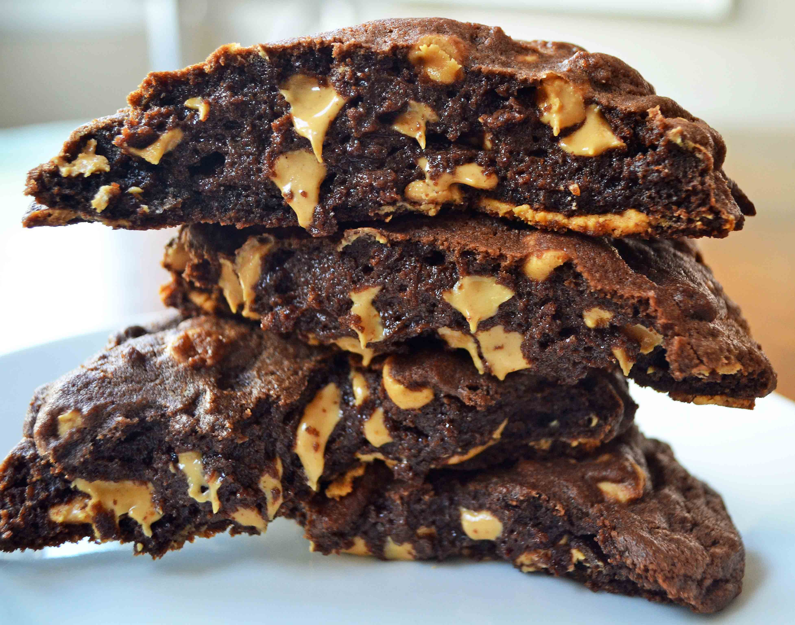

Levain Peanut Butter Chip Dark Chocolate Cookie

Description
This cookie is full of rich chocolate and studded with peanut butter chips for all of the peanut butter lovers out there. The fascinating thing about Levain Bakery cookies is their ability to be thick without being cakey.
It's basically a reeces peanut butter cup in cookie form!
Ingrendients
- 1 cup Cold Butter cut into small cubes
- 1 cup Brown Sugar
- 1/2 cup Sugar
- 2 Eggs
- 1/2 cup Dark Baking Cocoa
- 1 cup Cake Flour
- 1.5 cup All-Purpose Flour
- 1 teaspoon Cornstarch
- 3/4 teaspoon Baking Soda
- 1/2 teaspoon Salt
- 1 1/3 cup Peanut Butter chips
Instructions
- Preheat oven to 410 degrees.
- In a large bowl, cream together cold butter and sugars until light and fluffy, about 4 minutes. Add eggs one at a time, mixing well after each addition.
- Add cocoa, cake flour, all-purpose flour, cornstarch, baking soda, and salt and stir until combined. Stir in peanut butter chips (or can substitute chocolate chips).
- Chill dough for 10 minutes.
- Separate dough into large balls and place on lightly colored cookie sheet. Lightly press on top of dough to smooth out. They are bigger than you think! You will fit 4 cookies on one large cookie sheet. The dough makes 8 extra large cookies.
- Bake for 8-11 minutes or until golden brown on the top. Let them rest for at least 10 minutes to set.
back